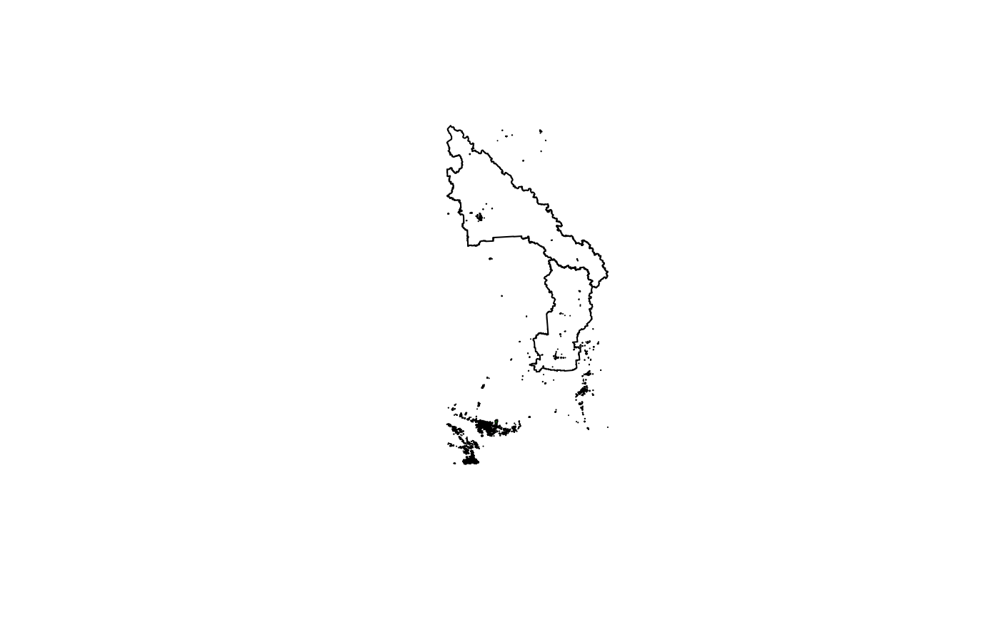
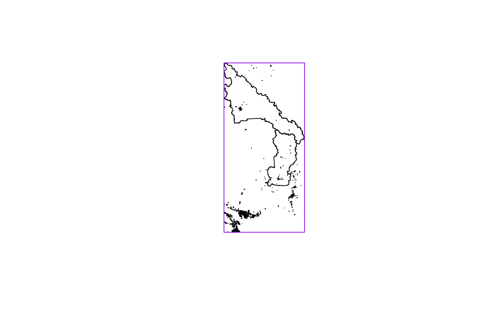

Querying Spatial Data with bcdata
2019-10-25
Source:vignettes/efficiently-query-spatial-data-in-the-bc-data-catalogue.Rmd
efficiently-query-spatial-data-in-the-bc-data-catalogue.RmdThis vignette illustrates how to use bcdata::bcdc_query_geodata to request and query Web Service-enabled geospatial data from the B.C. Data Catalogue. To illustrate, we will request and merge two spatial datasets from the catalogue—school district and greenspaces spatial data—and then examine the amount of park space contained within the boundaries of the Greater Victoria, Prince George and Kamloops/Thompson British Columbia school districts.
Getting Started
First you need to load the package. We will also load the sf and dplyr packages to help us work with spatial data. You can learn more about the sf package here and dplyr here:
library(bcdata)
#>
#> Attaching package: 'bcdata'
#> The following object is masked from 'package:stats':
#>
#> filter
library(sf)
#> Linking to GEOS 3.7.2, GDAL 2.4.2, PROJ 5.2.0
library(dplyr)
#>
#> Attaching package: 'dplyr'
#> The following objects are masked from 'package:stats':
#>
#> filter, lag
#> The following objects are masked from 'package:base':
#>
#> intersect, setdiff, setequal, unionGeospatial Data in the B.C. Data Catalogue
The B.C. Data Catalogue provides many datasets with spatial information through a Web Service. Technically speaking, this means if we have an internet connection we can issue HTTP requests to the catalogue and seamlessly import the response data into R as an sf objects. The bcdata package provides a means to a) choose which layer you want and b) use dplyr verbs to specifically tailor your request. A dbplyr backend is implemented so that requests are executed lazily meaning results are not transferred over the web until the user specifically calls the collect function. This approach mimics the dplyr verb translation to SQL seen for many database types. A good introduction to principles of dbplyr is available here.
School District Data
Our first step is to extract the school district polygons from the B.C. Data Catalogue. This layer is described using this command:
bcdc_get_record("78ec5279-4534-49a1-97e8-9d315936f08b")
#> B.C. Data Catalogue Record:
#> School Districts of BC
#>
#> Name: school-districts-of-bc (ID: 78ec5279-4534-49a1-97e8-9d315936f08b )
#> Permalink: https://catalogue.data.gov.bc.ca/dataset/78ec5279-4534-49a1-97e8-9d315936f08b
#> Sector: Education
#> Licence: Open Government Licence - British Columbia
#> Type: Geographic
#> Last Updated: 2019-09-05
#>
#> Description:
#> The School Districts dataset contains the spatial representation (polygon) of the
#> current extent of the administrative areas defined under section 176(1) of the
#> School Act for the purposes of preservation and promotion of the fundamental
#> principle of local autonomy and control of public education at the public and
#> governmental levels through locally elected school boards.
#>
#> Resources: ( 3 )
#> 1) BC Geographic Warehouse Custom Download
#> format: other
#> url: https://catalogue.data.gov.bc.ca/api/ofi/other/WHSE_TANTALIS.TA_SCHOOL_DISTRICTS_SVW
#> resource: 529507c4-d155-4c4d-a499-1a50be41b49d
#> available in R via bcdata: FALSE
#>
#> 2) WFS request (Spatial Data)
#> format: wfs
#> resource: 57d8843b-5278-4a0f-ba6b-7c6c3be2a81f
#> available in R via bcdata: TRUE
#> code: bcdc_get_data(record = '78ec5279-4534-49a1-97e8-9d315936f08b', resource = '57d8843b-5278-4a0f-ba6b-7c6c3be2a81f')
#>
#> 3) KML Network Link
#> format: kml
#> url: http://openmaps.gov.bc.ca/kml/geo/layers/WHSE_TANTALIS.TA_SCHOOL_DISTRICTS_SVW_loader.kml
#> resource: 7493e749-0e16-440c-94c0-521e5ad7c6de
#> available in R via bcdata: FALSEThis data is the boundary of each school district. The key information in this metadata is that the layer is a **WFS request (Spatial Data)**—which means it is available through a Web Service. From this we know we can make use of bcdc_query_geodata.
bcdc_query_geodata("78ec5279-4534-49a1-97e8-9d315936f08b")
#> Querying 'school-districts-of-bc' record
#> ● Using collect() on this object will return 59 features and 9 fields
#> ● At most six rows of the record are printed here
#> ───────────────────────────────────────────────────────────────────────────────────
#> Simple feature collection with 6 features and 9 fields
#> geometry type: POLYGON
#> dimension: XY
#> bbox: xmin: 1480584 ymin: 475225.2 xmax: 1870586 ymax: 862609.6
#> epsg (SRID): 3005
#> proj4string: +proj=aea +lat_1=50 +lat_2=58.5 +lat_0=45 +lon_0=-126 +x_0=1000000 +y_0=0 +ellps=GRS80 +towgs84=0,0,0,0,0,0,0 +units=m +no_defs
#> # A tibble: 6 x 10
#> id ADMIN_AREA_SID SCHOOL_DISTRICT… SCHOOL_DISTRICT… FEATURE_CODE
#> <chr> <int> <chr> <int> <chr>
#> 1 WHSE… 121 Southeast Koote… 5 FA91800600
#> 2 WHSE… 122 Rocky Mountain 6 FA91800600
#> 3 WHSE… 123 Kootenay Lake 8 FA91800600
#> 4 WHSE… 124 Arrow Lakes 10 FA91800600
#> 5 WHSE… 125 Revelstoke 19 FA91800600
#> 6 WHSE… 126 Kootenay-Columb… 20 FA91800600
#> # … with 5 more variables: FEATURE_AREA_SQM <dbl>, FEATURE_LENGTH_M <dbl>,
#> # OBJECTID <int>, SE_ANNO_CAD_DATA <chr>, geometry <POLYGON [m]>This is the initial query to the data in the catalogue. What has been returned is not the actual data but rather a subset to help you tune your query. The printed output of this query offers several useful pieces of information. Because we have queried with a unique ID, we are shown the name of the record. We also receive instruction that using collect() will retrieve a given number of features and fields present for this query. Lastly, there is a reminder that what is printed is only the first 6 rows of the record. Since we are limiting the scope of analysis to the Greater Victoria, Prince George and Kamloops/Thompson school districts, we want to ask the catalogue for only those polygons just like we would in a typical dplyr workflow:
bcdc_query_geodata("78ec5279-4534-49a1-97e8-9d315936f08b") %>%
filter(SCHOOL_DISTRICT_NAME %in% c("Greater Victoria", "Prince George","Kamloops/Thompson"))
#> Querying 'school-districts-of-bc' record
#> ● Using collect() on this object will return 3 features and 9 fields
#> ● At most six rows of the record are printed here
#> ───────────────────────────────────────────────────────────────────────────────────
#> Simple feature collection with 3 features and 9 fields
#> geometry type: MULTIPOLYGON
#> dimension: XY
#> bbox: xmin: 1126991 ymin: 379215.8 xmax: 1528154 ymax: 1224041
#> epsg (SRID): 3005
#> proj4string: +proj=aea +lat_1=50 +lat_2=58.5 +lat_0=45 +lon_0=-126 +x_0=1000000 +y_0=0 +ellps=GRS80 +towgs84=0,0,0,0,0,0,0 +units=m +no_defs
#> # A tibble: 3 x 10
#> id ADMIN_AREA_SID SCHOOL_DISTRICT… SCHOOL_DISTRICT… FEATURE_CODE
#> <chr> <int> <chr> <int> <chr>
#> 1 WHSE… 133 Prince George 57 FA91800600
#> 2 WHSE… 157 Greater Victoria 61 FA91800600
#> 3 WHSE… 167 Kamloops/Thomps… 73 FA91800600
#> # … with 5 more variables: FEATURE_AREA_SQM <dbl>, FEATURE_LENGTH_M <dbl>,
#> # OBJECTID <int>, SE_ANNO_CAD_DATA <chr>, geometry <MULTIPOLYGON [m]>To further tune our query, we can also request only the columns we want. Really we only want the school district column and the spatial information. During an actual analysis, it is possible that you may need to initially collect more data than you want to determine value to subset by. For example, there is currently no way to ask the catalogue for all possible unique values of SCHOOL_DISTRICT_NAME. Is that case the data will need to be brought into R and unique values will need to be determined there.
bcdc_query_geodata("78ec5279-4534-49a1-97e8-9d315936f08b") %>%
filter(SCHOOL_DISTRICT_NAME %in% c("Greater Victoria", "Prince George","Kamloops/Thompson")) %>%
select(SCHOOL_DISTRICT_NAME)
#> Querying 'school-districts-of-bc' record
#> ● Using collect() on this object will return 3 features and 5 fields
#> ● At most six rows of the record are printed here
#> ───────────────────────────────────────────────────────────────────────────────────
#> Simple feature collection with 3 features and 5 fields
#> geometry type: MULTIPOLYGON
#> dimension: XY
#> bbox: xmin: 1126991 ymin: 379215.8 xmax: 1528154 ymax: 1224041
#> epsg (SRID): 3005
#> proj4string: +proj=aea +lat_1=50 +lat_2=58.5 +lat_0=45 +lon_0=-126 +x_0=1000000 +y_0=0 +ellps=GRS80 +towgs84=0,0,0,0,0,0,0 +units=m +no_defs
#> # A tibble: 3 x 6
#> id ADMIN_AREA_SID SCHOOL_DISTRICT… SCHOOL_DISTRICT… OBJECTID
#> <chr> <int> <chr> <int> <int>
#> 1 WHSE… 133 Prince George 57 13
#> 2 WHSE… 157 Greater Victoria 61 37
#> 3 WHSE… 167 Kamloops/Thomps… 73 47
#> # … with 1 more variable: geometry <MULTIPOLYGON [m]>Note that in the select statement, we did not explicitly ask for the spatial data and also that there are several columns present that we didn’t select. This is because within each dataset in the data catalogue, there are several columns that will always be returned regardless of what is selected. If you really don’t want those columns after you collect the data, which we will take care of right now, you can drop them:
districts <- bcdc_query_geodata("78ec5279-4534-49a1-97e8-9d315936f08b") %>%
filter(SCHOOL_DISTRICT_NAME %in% c("Greater Victoria", "Prince George","Kamloops/Thompson")) %>%
select(SCHOOL_DISTRICT_NAME) %>%
collect()Again note here that we have assigned the object a name and added the collect statement. This step happens when you have selected the data you want and wish to begin working with it in R like a normal sf object. For example, we can now plot these three school districts:
plot(st_geometry(districts))
Now that we have the spatial boundaries narrowed by specific school districts we can perform some spatial operations to determine parks in the school districts.
Greenspaces Data
For the purposes of this example, let’s consider this greenspace layer in the catalogue. This layer is described here:
bcdc_get_record("6a2fea1b-0cc4-4fc2-8017-eaf755d516da")
#> B.C. Data Catalogue Record:
#> Local and Regional Greenspaces
#>
#> Name: local-and-regional-greenspaces (ID: 6a2fea1b-0cc4-4fc2-8017-eaf755d516da )
#> Permalink: https://catalogue.data.gov.bc.ca/dataset/6a2fea1b-0cc4-4fc2-8017-eaf755d516da
#> Sector: Natural Resources
#> Licence: Open Government Licence - British Columbia
#> Type: Geographic
#> Last Updated: 2019-09-05
#>
#> Description:
#> This dataset contains spatial and attribute information for local and regional
#> greenspaces in British Columbia. Local and regional greenspaces are municipal or
#> regional district lands designated by local government agencies and managed for
#> public enjoyment, ecosystem or wildlife values. Spatial boundaries were sourced from
#> municipal and regional district web sites, which in some cases provide datasets
#> under Open Government Licence, and in other cases, publicize parks and greenspaces
#> on web maps or pdf maps. Boundaries were edge-matched to the ParcelMap BC cadastre.
#> This spatial layer contains multipart polygons.
#>
#> Resources: ( 4 )
#> 1) BC Geographic Warehouse Custom Download
#> format: other
#> url: https://catalogue.data.gov.bc.ca/api/ofi/other/WHSE_BASEMAPPING.GBA_LOCAL_REG_GREENSPACES_SP
#> resource: dac89711-ebf4-46a9-9572-785471a0debc
#> available in R via bcdata: FALSE
#>
#> 2) WFS request (Spatial Data)
#> format: wfs
#> resource: a8d5b53e-2ecf-4346-ba9c-5dead60ab471
#> available in R via bcdata: TRUE
#> code: bcdc_get_data(record = '6a2fea1b-0cc4-4fc2-8017-eaf755d516da', resource = 'a8d5b53e-2ecf-4346-ba9c-5dead60ab471')
#>
#> 3) KML Network Link
#> format: kml
#> url: http://openmaps.gov.bc.ca/kml/geo/layers/WHSE_BASEMAPPING.GBA_LOCAL_REG_GREENSPACES_SP_loader.kml
#> resource: a7454e41-017b-42c4-a2dc-74cbc7489199
#> available in R via bcdata: FALSE
#>
#> 4) LocalRegionalParksAttributeValues
#> format: xlsx
#> url: https://catalogue.data.gov.bc.ca/dataset/6a2fea1b-0cc4-4fc2-8017-eaf755d516da/resource/76663191-43b6-4a10-a28d-a9d8a059bacb/download/localregionalparksattributevalues.xlsx
#> resource: 76663191-43b6-4a10-a28d-a9d8a059bacb
#> available in R via bcdata: TRUE
#> code: bcdc_get_data(record = '6a2fea1b-0cc4-4fc2-8017-eaf755d516da', resource = '76663191-43b6-4a10-a28d-a9d8a059bacb')Again we recognize this is Web Service-enabled geospatial data, which means we can make use of bcdc_query_geodata.
bcdc_query_geodata("6a2fea1b-0cc4-4fc2-8017-eaf755d516da")
#> Querying 'local-and-regional-greenspaces' record
#> ● Using collect() on this object will return 8708 features and 19 fields
#> ● At most six rows of the record are printed here
#> ───────────────────────────────────────────────────────────────────────────────────
#> Simple feature collection with 6 features and 19 fields
#> geometry type: POLYGON
#> dimension: XY
#> bbox: xmin: 1228760 ymin: 459819.7 xmax: 1242329 ymax: 469547.6
#> epsg (SRID): 3005
#> proj4string: +proj=aea +lat_1=50 +lat_2=58.5 +lat_0=45 +lon_0=-126 +x_0=1000000 +y_0=0 +ellps=GRS80 +towgs84=0,0,0,0,0,0,0 +units=m +no_defs
#> # A tibble: 6 x 20
#> id LOCAL_REG_GREEN… PARK_NAME PARK_TYPE PARK_PRIMARY_USE
#> <chr> <int> <chr> <chr> <chr>
#> 1 WHSE… 1 Guildfor… Local Civic Facility
#> 2 WHSE… 2 Guy Rich… Local Park
#> 3 WHSE… 3 Hartnell… Local Park
#> 4 WHSE… 4 51C - Wa… Local Trail
#> 5 WHSE… 5 52A - Gr… Local Green Space
#> 6 WHSE… 6 52G - De… Local Green Space
#> # … with 15 more variables: REGIONAL_DISTRICT <chr>, MUNICIPALITY <chr>,
#> # CIVIC_NUMBER <int>, CIVIC_NUMBER_SUFFIX <chr>, STREET_NAME <chr>,
#> # LATITUDE <dbl>, LONGITUDE <dbl>, WHEN_UPDATED <date>,
#> # WEBSITE_URL <chr>, LICENCE_COMMENTS <chr>, FEATURE_AREA_SQM <dbl>,
#> # FEATURE_LENGTH_M <dbl>, OBJECTID <int>, SE_ANNO_CAD_DATA <chr>,
#> # geometry <POLYGON [m]>Since we are interested in only “Park” data we can subset our query:
bcdc_query_geodata("6a2fea1b-0cc4-4fc2-8017-eaf755d516da") %>%
filter(PARK_PRIMARY_USE == "Park")
#> Querying 'local-and-regional-greenspaces' record
#> ● Using collect() on this object will return 4373 features and 19 fields
#> ● At most six rows of the record are printed here
#> ───────────────────────────────────────────────────────────────────────────────────
#> Simple feature collection with 6 features and 19 fields
#> geometry type: POLYGON
#> dimension: XY
#> bbox: xmin: 1227676 ymin: 459819.7 xmax: 1242329 ymax: 467135.4
#> epsg (SRID): 3005
#> proj4string: +proj=aea +lat_1=50 +lat_2=58.5 +lat_0=45 +lon_0=-126 +x_0=1000000 +y_0=0 +ellps=GRS80 +towgs84=0,0,0,0,0,0,0 +units=m +no_defs
#> # A tibble: 6 x 20
#> id LOCAL_REG_GREEN… PARK_NAME PARK_TYPE PARK_PRIMARY_USE
#> <chr> <int> <chr> <chr> <chr>
#> 1 WHSE… 2 Guy Rich… Local Park
#> 2 WHSE… 3 Hartnell… Local Park
#> 3 WHSE… 20 50B - Ut… Local Park
#> 4 WHSE… 21 Bear Cre… Local Park
#> 5 WHSE… 22 Beaver C… Local Park
#> 6 WHSE… 23 Bel-Air … Local Park
#> # … with 15 more variables: REGIONAL_DISTRICT <chr>, MUNICIPALITY <chr>,
#> # CIVIC_NUMBER <int>, CIVIC_NUMBER_SUFFIX <chr>, STREET_NAME <chr>,
#> # LATITUDE <dbl>, LONGITUDE <dbl>, WHEN_UPDATED <date>,
#> # WEBSITE_URL <chr>, LICENCE_COMMENTS <chr>, FEATURE_AREA_SQM <dbl>,
#> # FEATURE_LENGTH_M <dbl>, OBJECTID <int>, SE_ANNO_CAD_DATA <chr>,
#> # geometry <POLYGON [m]>Here we see that this greatly reduces the number of features that we are dealing with (and correspondingly the amount of data that needs to be transferred over the web). Remember also that we still have not actually requested the full dataset. This is just still a preview. Also this query still includes all municipal parks in BC while we only want the ones in the three school districts - the polygons defined by the districts object. To find that subset of parks we can make use of the built-in geometric operators which allow us to perform spatial operations remotely fine tuning our query even further. Here using the INTERSECTS function is appropriate and since this is a last tuning step, we can call collect and assign a name to this object. These requests can sometimes take quite a long:
districts_parks <- bcdc_query_geodata("6a2fea1b-0cc4-4fc2-8017-eaf755d516da") %>%
filter(PARK_PRIMARY_USE == "Park") %>%
filter(INTERSECTS(districts)) %>%
collect()
#> Warning: The object is too large to perform exact spatial operations using bcdata.
#> To simplify the polygon, a bounding box was drawn around the polygon and all
#> features within the box will be returned. Options include further processing
#> with on the returned object or simplify the object.Plotting both the filtered parks data and the district polygons reveals an important consideration when using bcdata:

In this example, many parks not contained within the school districts are included in the districts_parks object. This is because rather than a full intersection, bcdata draws a bounding box around all the polygons that are doing the intersection (in this case district) and does the intersection based on that bounding box. This is a limitation imposed by the size of the object doing the geometric operation (in this case district) and the limits of the BC Data Catalogue. Drawing the bounding box illustrates this point:

We are left with two options to get around this problem. First, we can simply do some additional processing with the sf package. Specifically we can use a spatial join to assign parks into their respective district:
districts_parks_join <- districts_parks %>%
st_join(districts, left = FALSE) 
A second approach is to set an internal option (bcdata.max_geom_pred_size) and increase the threshold of when a bounding box is drawn. Options are set in R like this:
options("bcdata.max_geom_pred_size" = {object size in bytes})The value of bcdata.max_geom_pred_size is set conservatively so that requests to the Web Service are more consistently successful. Increasing this value may result in invalid requests.
Finally, to address our original question of which school district has the most municipal park space we can calculate the area of each park polygon and then sum those areas by school district:
districts_parks_join %>%
mutate(area = st_area(geometry)) %>%
st_set_geometry(NULL) %>%
group_by(SCHOOL_DISTRICT_NAME) %>%
summarise(total_area = sum(area)) %>%
arrange(total_area)
#> # A tibble: 3 x 2
#> SCHOOL_DISTRICT_NAME total_area
#> <chr> [m^2]
#> 1 Kamloops/Thompson 3982629
#> 2 Prince George 12254343
#> 3 Greater Victoria 25587503Additional Useful Functions
There are a couple of other functions in bcdata that are useful to know when working with spatial data from the catalogue. bcdc_describe_feature gives the column names, whether the column is selectable, and the column types in both R and on the remote server:
bcdc_describe_feature("6a2fea1b-0cc4-4fc2-8017-eaf755d516da")
#> # A tibble: 20 x 4
#> col_name selectable remote_col_type local_col_type
#> <chr> <lgl> <chr> <chr>
#> 1 id FALSE xsd:string character
#> 2 LOCAL_REG_GREENSPACE_… FALSE xsd:decimal numeric
#> 3 PARK_NAME TRUE xsd:string character
#> 4 PARK_TYPE TRUE xsd:string character
#> 5 PARK_PRIMARY_USE TRUE xsd:string character
#> 6 REGIONAL_DISTRICT TRUE xsd:string character
#> 7 MUNICIPALITY TRUE xsd:string character
#> 8 CIVIC_NUMBER TRUE xsd:decimal numeric
#> 9 CIVIC_NUMBER_SUFFIX TRUE xsd:string character
#> 10 STREET_NAME TRUE xsd:string character
#> 11 LATITUDE TRUE xsd:decimal numeric
#> 12 LONGITUDE TRUE xsd:decimal numeric
#> 13 WHEN_UPDATED TRUE xsd:date date
#> 14 WEBSITE_URL TRUE xsd:string character
#> 15 LICENCE_COMMENTS TRUE xsd:string character
#> 16 FEATURE_AREA_SQM TRUE xsd:decimal numeric
#> 17 FEATURE_LENGTH_M TRUE xsd:decimal numeric
#> 18 SHAPE TRUE gml:GeometryPropertyTy… sfc geometry
#> 19 OBJECTID FALSE xsd:decimal numeric
#> 20 SE_ANNO_CAD_DATA TRUE xsd:hexBinary numericThis is a helpful initial step to learn column names and types when you construct your query.
Another useful function is show_query() which provides information on the request issued to the remote server:
bcdc_query_geodata("6a2fea1b-0cc4-4fc2-8017-eaf755d516da") %>%
filter(PARK_PRIMARY_USE == "Park") %>%
filter(INTERSECTS(districts)) %>%
show_query()
#> Warning: The object is too large to perform exact spatial operations using bcdata.
#> To simplify the polygon, a bounding box was drawn around the polygon and all
#> features within the box will be returned. Options include further processing
#> with on the returned object or simplify the object.
#> <url>
#> https://openmaps.gov.bc.ca/geo/pub/wfs
#>
#> <body>
#> SERVICE: WFS
#> VERSION: 2.0.0
#> REQUEST: GetFeature
#> outputFormat: application/json
#> typeNames: WHSE_BASEMAPPING.GBA_LOCAL_REG_GREENSPACES_SP
#> SRSNAME: EPSG:3005
#> CQL_FILTER: (("PARK_PRIMARY_USE" = 'Park') AND (INTE...This output is what being created by the dplyr code outlined above.
Using B.C. Geographic Warehouse (BCGW) layer names
If you are familiar with the B.C. Geographic Warehouse (BCGW), you may already know the name of a layer that you want from the BCGW. bcdc_query_geodata() (as well as all other related functions) supports supplying that name directly. For example, the record for the B.C. airports layer shows that the object name is WHSE_IMAGERY_AND_BASE_MAPS.GSR_AIRPORTS_SVW, and we can use that in bcdc_query_geodata():
# Look at the columns available:
bcdc_describe_feature("WHSE_IMAGERY_AND_BASE_MAPS.GSR_AIRPORTS_SVW")
#> # A tibble: 42 x 4
#> col_name selectable remote_col_type local_col_type
#> <chr> <lgl> <chr> <chr>
#> 1 id FALSE xsd:string character
#> 2 CUSTODIAN_ORG_DESCRIPTION FALSE xsd:string character
#> 3 BUSINESS_CATEGORY_CLASS FALSE xsd:string character
#> 4 BUSINESS_CATEGORY_DESCRIPTION FALSE xsd:string character
#> 5 OCCUPANT_TYPE_DESCRIPTION FALSE xsd:string character
#> 6 SOURCE_DATA_ID FALSE xsd:string character
#> 7 SUPPLIED_SOURCE_ID_IND FALSE xsd:string character
#> 8 AIRPORT_NAME FALSE xsd:string character
#> 9 DESCRIPTION TRUE xsd:string character
#> 10 PHYSICAL_ADDRESS TRUE xsd:string character
#> # … with 32 more rows
# Query the data with bcdc_query_geodata and filter + select:
bcdc_query_geodata("WHSE_IMAGERY_AND_BASE_MAPS.GSR_AIRPORTS_SVW") %>%
filter(DESCRIPTION == "airport") %>%
select(AIRPORT_NAME, LOCALITY, NUMBER_OF_RUNWAYS)
#> Querying 'WHSE_IMAGERY_AND_BASE_MAPS.GSR_AIRPORTS_SVW' record
#> ● Using collect() on this object will return 37 features and 13 fields
#> ● At most six rows of the record are printed here
#> ───────────────────────────────────────────────────────────────────────────────────
#> Simple feature collection with 6 features and 13 fields
#> geometry type: POINT
#> dimension: XY
#> bbox: xmin: 833323.9 ymin: 406886.6 xmax: 1266385 ymax: 1054950
#> epsg (SRID): 3005
#> proj4string: +proj=aea +lat_1=50 +lat_2=58.5 +lat_0=45 +lon_0=-126 +x_0=1000000 +y_0=0 +ellps=GRS80 +towgs84=0,0,0,0,0,0,0 +units=m +no_defs
#> # A tibble: 6 x 14
#> id CUSTODIAN_ORG_D… BUSINESS_CATEGO… BUSINESS_CATEGO… OCCUPANT_TYPE_D…
#> <chr> <chr> <chr> <chr> <chr>
#> 1 WHSE… "Ministry of Fo… airTransportati… Air Transportat… BC Airports
#> 2 WHSE… "Ministry of Fo… airTransportati… Air Transportat… BC Airports
#> 3 WHSE… "Ministry of Fo… airTransportati… Air Transportat… BC Airports
#> 4 WHSE… "Ministry of Fo… airTransportati… Air Transportat… BC Airports
#> 5 WHSE… "Ministry of Fo… airTransportati… Air Transportat… BC Airports
#> 6 WHSE… "Ministry of Fo… airTransportati… Air Transportat… BC Airports
#> # … with 9 more variables: SOURCE_DATA_ID <chr>,
#> # SUPPLIED_SOURCE_ID_IND <chr>, AIRPORT_NAME <chr>, LOCALITY <chr>,
#> # LATITUDE <dbl>, LONGITUDE <dbl>, NUMBER_OF_RUNWAYS <int>,
#> # SEQUENCE_ID <int>, geometry <POINT [m]>